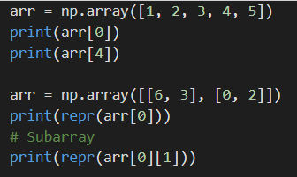

Accessing NumPy arrays is identical to accessing Python lists. For multi-dimensional arrays, it is equivalent to accessing Python lists of lists.

Slicing
NumPy arrays also support slicing. Similar to Python, we use the colon operator (i.e. arr[:] ) for slicing. We can also use negative indexing to slice in the backwards direction.
For multi-dimensional arrays, we can use a comma to separate slices across each dimension.
Argmin and argmax
In addition to accessing and slicing arrays, it is useful to figure out the actual indexes of the minimum and maximum elements. To do this, we use the np.argmin and np.argmax functions.
The code below shows example usages of np.argmin and np.argmax.Note that the index of element -6 is the index 5 in the flattended version of arr.
The np.argmin and np.argmax functions take the same arguments. The required argument is the input array and the axis keyword argument specifies which dimension to apply the operation on.
In our example, using
axis=0 : meant the function found the index of the minimum row element for each column.
axis=1 : the function found the index of the minimum column element for each row.
axis=-1 : means we apply the function across the last dimension. In this case, axis=-1 is equivalent to axis=1.